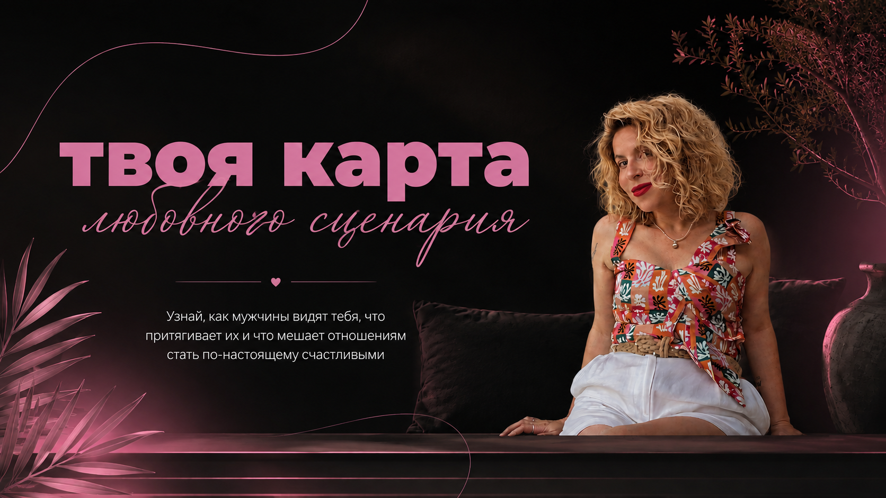

Отношения редко заканчиваются случайно.
Чаще мы снова и снова проживаем похожую историю — только с разными мужчинами.
Сейчас тебе предстоит пройти четыре главы: от первого знакомства до момента выбора.
Ты ответила на все вопросы — и теперь отдельные детали сложились в общую картину.
Здесь важен не один ответ, а то, как они связались между собой.